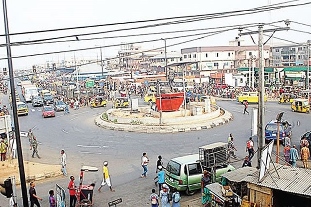

The name of my favorite city is Ikorodu, is located in the north-east of lagos where I live in, it shares a boundary with Ogun state. With a population of over 1 million inhabitants, Ikorodu is currently the 12th largest city in Nigeria and growing at a rate of 5.26% annually, it is projected to reach 1.7 million inhabitants by 2035.
It is the 2nd largest local government in Lagos State. Indigenous settlers of Ikorodu emigrated from Sagamu and part of Ijebu in Ogun state.
